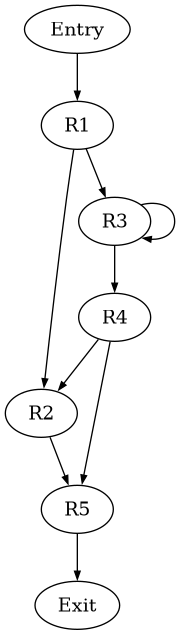
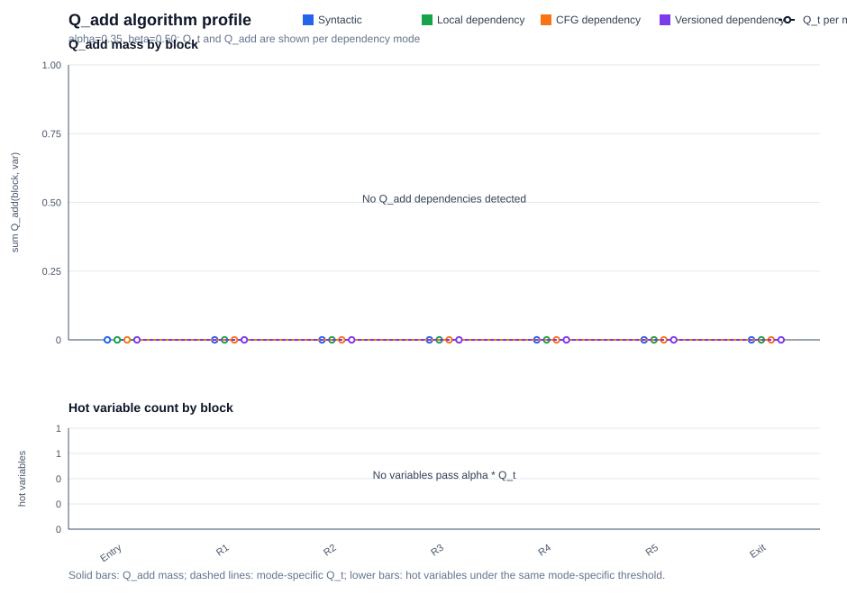
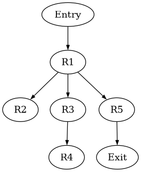
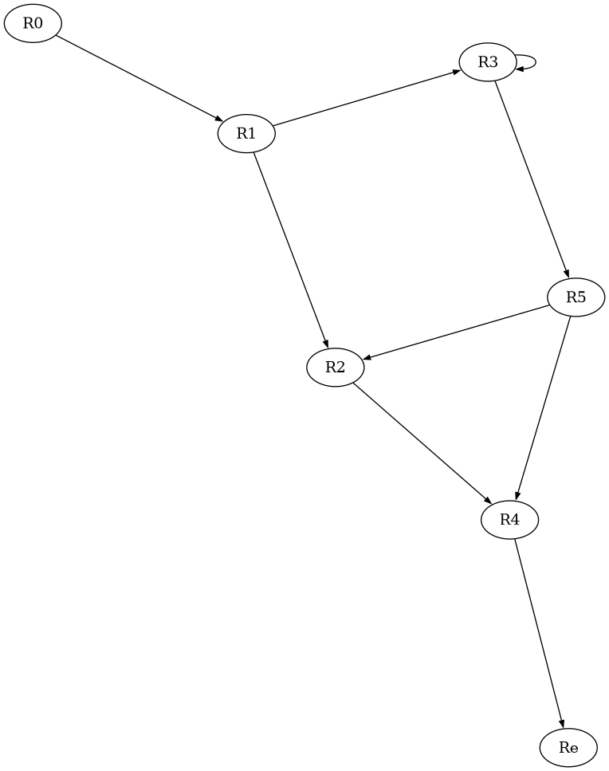
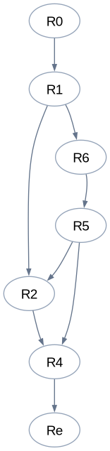
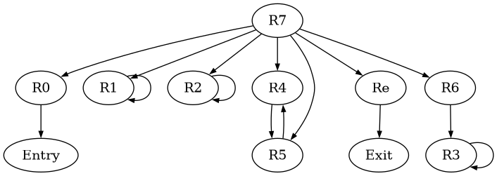

Block R1 4 lines
param c i ⟵ # 0a ⟵ - ,# 2i b ⟵ + ,# 2i
Pipeline report
Generated from the current MIR input and analysis stages.

Tracederivation steps
| block | branch | condition symbols | true edge | false edge | prefixes shown | path prefix | status |
|---|---|---|---|---|---|---|---|
| No conditional branches | None | None | None | None | 0 | true | no ifTrue / ifFalse branch lines in this input |
Tracederivation steps
| block | raw MIR condition | Z3 input | Z3 simplified | rendered | raw path prefix | rendered path prefix | input AST nodes | simplified AST nodes | input depth | simplified depth | ITE before | ITE after | status |
|---|---|---|---|---|---|---|---|---|---|---|---|---|---|
| No conditional branches | true | True | True | true | true | true | 1 | 1 | 1 | 1 | 0 | 0 | constant |
Algorithm metrics
| mode | variables | dependency blocks | max Qt | total Qadd mass | L1 Δ vs CFG | hot refs | status |
|---|---|---|---|---|---|---|---|
| Syntactic | 0 | 0 | 0 | 0 | 0 | 0 | aggregate over displayed blocks |
| Local dependency | 0 | 0 | 0 | 0 | 0 | 0 | aggregate over displayed blocks |
| CFG dependency | 0 | 0 | 0 | 0 | 0 | 0 | aggregate over displayed blocks |
| Versioned dependency | 0 | 0 | 0 | 0 | 0 | 0 | aggregate over displayed blocks |
Syntactic branch variables
| block | Qt | hot variables | Qadd(block, var) | status |
|---|---|---|---|---|
| Entry | 0 | None | None | alpha=0.35, beta=0.50; syntactic C relation |
| R1 | 0 | None | None | alpha=0.35, beta=0.50; syntactic C relation |
| R2 | 0 | None | None | alpha=0.35, beta=0.50; syntactic C relation |
| R3 | 0 | None | None | alpha=0.35, beta=0.50; syntactic C relation |
| R4 | 0 | None | None | alpha=0.35, beta=0.50; syntactic C relation |
| R5 | 0 | None | None | alpha=0.35, beta=0.50; syntactic C relation |
| Exit | 0 | None | None | alpha=0.35, beta=0.50; syntactic C relation |
Local dependency variables
| block | Qt | hot variables | Qadd(block, var) | status |
|---|---|---|---|---|
| Entry | 0 | None | None | alpha=0.35, beta=0.50; local dependency C relation |
| R1 | 0 | None | None | alpha=0.35, beta=0.50; local dependency C relation |
| R2 | 0 | None | None | alpha=0.35, beta=0.50; local dependency C relation |
| R3 | 0 | None | None | alpha=0.35, beta=0.50; local dependency C relation |
| R4 | 0 | None | None | alpha=0.35, beta=0.50; local dependency C relation |
| R5 | 0 | None | None | alpha=0.35, beta=0.50; local dependency C relation |
| Exit | 0 | None | None | alpha=0.35, beta=0.50; local dependency C relation |
CFG dependency variables
| block | Qt | hot variables | Qadd(block, var) | status |
|---|---|---|---|---|
| Entry | 0 | None | None | alpha=0.35, beta=0.50; cfg dependency C relation |
| R1 | 0 | None | None | alpha=0.35, beta=0.50; cfg dependency C relation |
| R2 | 0 | None | None | alpha=0.35, beta=0.50; cfg dependency C relation |
| R3 | 0 | None | None | alpha=0.35, beta=0.50; cfg dependency C relation |
| R4 | 0 | None | None | alpha=0.35, beta=0.50; cfg dependency C relation |
| R5 | 0 | None | None | alpha=0.35, beta=0.50; cfg dependency C relation |
| Exit | 0 | None | None | alpha=0.35, beta=0.50; cfg dependency C relation |
Versioned dependency variables
| block | Qt | hot variables | Qadd(block, var) | status |
|---|---|---|---|---|
| Entry | 0 | None | None | alpha=0.35, beta=0.50; versioned dependency C relation |
| R1 | 0 | None | None | alpha=0.35, beta=0.50; versioned dependency C relation |
| R2 | 0 | None | None | alpha=0.35, beta=0.50; versioned dependency C relation |
| R3 | 0 | None | None | alpha=0.35, beta=0.50; versioned dependency C relation |
| R4 | 0 | None | None | alpha=0.35, beta=0.50; versioned dependency C relation |
| R5 | 0 | None | None | alpha=0.35, beta=0.50; versioned dependency C relation |
| Exit | 0 | None | None | alpha=0.35, beta=0.50; versioned dependency C relation |
Q_add algorithm profile
| chart |
|---|
 |
Bounded node tree
| loop | depth | node | via condition | children | inferred role |
|---|---|---|---|---|---|
| R3 ← R3 | 0 | R3 | loop header | R3, R4 | linear block |
| R3 ← R3 | 1 | R3 | true | R3, R4 | linear block |
| R2 ← R4 | 0 | R2 | loop header | R5 | linear block |
Pattern inference
| loop | pattern | evidence | inferred sketch | status |
|---|---|---|---|---|
| R3 ← R3 | loop guard | R3 | not inferred | missing branch guard |
| R3 ← R3 | induction update | R3 | not inferred | not inferred |
| R3 ← R3 | guarded accumulator | None | not inferred | requires two branch arms updating the same variable |
| R3 ← R3 | quantified sketch | R3 | not inferred | report-level formula; not emitted to a solver |
| R2 ← R4 | loop guard | R2 | not inferred | missing branch guard |
| R2 ← R4 | induction update | R4 | not inferred | not inferred |
| R2 ← R4 | guarded accumulator | None | not inferred | requires two branch arms updating the same variable |
| R2 ← R4 | quantified sketch | R2 | not inferred | report-level formula; not emitted to a solver |
Automaton walkthrough
| loop | state | case | node | condition | action | next | status |
|---|---|---|---|---|---|---|---|
| R3 ← R3 | S0 | loop exits before next iteration | R3 | no guard | emit terminal leaf for current k | REJECT | terminal case similar to a leaf in the execution tree |
| R3 ← R3 | S0 | loop continues | R3 | no guard | enter loop body for iteration k | REJECT | missing loop guard |
| R3 ← R3 | S1 | inner branch | None | not inferred | no two-arm accumulator update found | REJECT | pattern incomplete |
| R3 ← R3 | S2 | latch / repeat | R3 | after either arm | no linear induction update found | REJECT | pattern incomplete |
| R2 ← R4 | S0 | loop exits before next iteration | R2 | no guard | emit terminal leaf for current k | REJECT | terminal case similar to a leaf in the execution tree |
| R2 ← R4 | S0 | loop continues | R2 | no guard | enter loop body for iteration k | REJECT | missing loop guard |
| R2 ← R4 | S1 | inner branch | None | not inferred | no two-arm accumulator update found | REJECT | pattern incomplete |
| R2 ← R4 | S2 | latch / repeat | R4 | after either arm | no linear induction update found | REJECT | pattern incomplete |
Tracederivation steps
| family | status | why unavailable | current action |
|---|---|---|---|
| Array transformations | stub | current MIR has no array read/write syntax or array values | keep as documentation-only placeholder |
| Function summaries | stub | current MIR has param/return but no call instruction, callee identity, or call graph | keep as documentation-only placeholder |
| Heap/list/shape execution | out of scope | current MIR has no heap allocation, fields, references, aliases, or predicates | do not expand parser for this dump-first task |
| Compiled symbolic execution | out of scope | project is not compiling LLVM/C/Java into a symbolic executor | no implementation planned |
No instructions in this block.
| 1 |
|
|||
| 2 |
|
|||
| 3 |
|
|||
| 4 |
|
|||
| 5 |
|
|||
| 1 |
|
|||
| 2 |
|
|||
| 3 |
|
|||
| 1 |
|
|||
| 2 |
|
|||
| 3 |
|
|||
| 1 |
|
|||
| 2 |
|
|||
| 3 |
|
|||
| 1 |
|
|||
| 2 |
|
|||
| 3 |
|
|||
| 4 |
|
|||
| 5 |
|
|||
| 6 |
|
|||
| 7 |
|
|||
| 8 |
|
|||
No instructions in this block.
Tracederivation steps
| block | Entry | R1 | R2 | R3 | R4 | R5 | Exit |
|---|---|---|---|---|---|---|---|
| Input(block) | None | c | i | a, b | None | c, i | None |
| Output(block) | None | a, b, i | a | a, b, j | i | a, b | None |
| node = | Entry | R1 | R2 | R3 | R4 | R5 | Exit |
|---|---|---|---|---|---|---|---|
| Pred(node) | None | Entry | R1, R4 | R1, R3 | R3 | R2, R4 | R5 |
| Dom(node) | Entry | Entry, R1 | Entry, R1, R2 | Entry, R1, R3 | Entry, R1, R3, R4 | Entry, R1, R5 | Entry, R1, R5, Exit |
| Idom(node) | None | Entry | R1 | R1 | R3 | R1 | R5 |
| DF(node) | None | None | R5 | R2, R3, R5 | R2, R5 | None | None |

| node = | Entry | R1 | R2 | R3 | R4 | R5 | Exit |
|---|---|---|---|---|---|---|---|
| Pdom(node) | Entry, R1, R5, Exit | R1, R5, Exit | R2, R5, Exit | R3, R4, R5, Exit | R4, R5, Exit | R5, Exit | Exit |
| Ipdom(node) | R1 | R5 | R5 | R4 | R5 | Exit | None |
| CD(node) | None | None | R1, R4 | R1, R3 | R1 | None | None |
Tracederivation steps
| var = | a | b | i | j |
|---|---|---|---|---|
| Blocks(var) | R1, R2, R3, R5 | R1, R3, R5 | R1, R4 | R3 |
| is Global | + | + | + | - |
Tracederivation steps
| block = | Entry | R1 | R2 | R3 | R4 | R5 | Exit |
|---|---|---|---|---|---|---|---|
| a | - | - | + | + | - | + | - |
| b | - | - | + | + | - | + | - |
| c | - | - | - | - | - | - | - |
| i | - | - | + | - | - | + | - |
| j | - | - | - | - | - | - | - |
Tracederivation steps
Tracederivation steps
| check | status | details |
|---|---|---|
| SSA rename scope | partial | |
| Untracked variables | not renamed | |
| Tracked definitions named | + | ok |
| Tracked uses named | + | ok |
| Unique tracked definitions | + | ok |
| Phi arity matches predecessors | + | ok |
Tracederivation steps
| join | predecessors | variable | merge preview | merge metrics | status |
|---|---|---|---|---|---|
| R2 | R1, R4 | a | ite(path(R1), a1, a5) {(path(R1), a1), (path(R4), a5)} |
preds=2, mapped=2, ite ops=1, summary entries=2 | predecessor-mapped; no SMT check |
| R2 | R1, R4 | b | ite(path(R1), b1, b4) {(path(R1), b1), (path(R4), b4)} |
preds=2, mapped=2, ite ops=1, summary entries=2 | predecessor-mapped; no SMT check |
| R2 | R1, R4 | i | ite(path(R1), i1, i3) {(path(R1), i1), (path(R4), i3)} |
preds=2, mapped=2, ite ops=1, summary entries=2 | predecessor-mapped; no SMT check |
| R3 | R1, R3 | a | ite(path(R1), a1, a5) {(path(R1), a1), (path(R3), a5)} |
preds=2, mapped=2, ite ops=1, summary entries=2 | predecessor-mapped; no SMT check |
| R3 | R1, R3 | b | ite(path(R1), b1, b4) {(path(R1), b1), (path(R3), b4)} |
preds=2, mapped=2, ite ops=1, summary entries=2 | predecessor-mapped; no SMT check |
| R5 | R2, R4 | a | ite(path(R2), a3, a5) {(path(R2), a3), (path(R4), a5)} |
preds=2, mapped=2, ite ops=1, summary entries=2 | predecessor-mapped; no SMT check |
| R5 | R2, R4 | b | ite(path(R2), b2, b4) {(path(R2), b2), (path(R4), b4)} |
preds=2, mapped=2, ite ops=1, summary entries=2 | predecessor-mapped; no SMT check |
| R5 | R2, R4 | i | ite(path(R2), i2, i3) {(path(R2), i2), (path(R4), i3)} |
preds=2, mapped=2, ite ops=1, summary entries=2 | predecessor-mapped; no SMT check |
Tracederivation steps
| join | predecessors | candidate merged vars | merged source deps | future hot vars | risky overlap | decision | reason |
|---|---|---|---|---|---|---|---|
| R2 | R1, R4 | a, b, i | None | None | None | no-future-query | Q_t is zero; no future branch pressure is visible at this join |
| R3 | R1, R3 | a, b | None | None | None | no-future-query | Q_t is zero; no future branch pressure is visible at this join |
| R5 | R2, R4 | a, b, i | None | None | None | no-future-query | Q_t is zero; no future branch pressure is visible at this join |
Tracederivation steps
| join | variable | raw MIR expression | Z3 input | Z3 simplified | rendered | input AST nodes | simplified AST nodes | input depth | simplified depth | ITE before | ITE after | status |
|---|---|---|---|---|---|---|---|---|---|---|---|---|
| R2 | a | None | None | None | None | 0 | 0 | 0 | 0 | 0 | missing expression: source expression could not be reconstructed | |
| R2 | b | None | None | None | None | 0 | 0 | 0 | 0 | 0 | missing expression: source expression could not be reconstructed | |
| R2 | i | ite(true, #0, #1 + i) | ite(True, 0, 1 + i) | 0 | 0 | 6 | 1 | 3 | 1 | 1 | 0 | constant |
| R3 | a | ite(true, #2 - #0, a + b) | ite(True, 2 - 0, a + b) | 2 | 2 | 8 | 1 | 3 | 1 | 1 | 0 | constant |
| R3 | b | ite(true, #2 + #0, a + b) | ite(True, 2 + 0, a + b) | 2 | 2 | 8 | 1 | 3 | 1 | 1 | 0 | constant |
| R5 | a | None | None | None | None | 0 | 0 | 0 | 0 | 0 | missing expression: source expression could not be reconstructed | |
| R5 | b | None | None | None | None | 0 | 0 | 0 | 0 | 0 | missing expression: source expression could not be reconstructed | |
| R5 | i | None | None | None | None | 0 | 0 | 0 | 0 | 0 | missing expression: source expression could not be reconstructed |
Tracederivation steps
| merge site | variable | ite preview | future branch | expanded branch preview | ite ops | ite depth | expr size | status |
|---|---|---|---|---|---|---|---|---|
| R2 | a | None | None | None | 0 | 0 | 0 | missing expression: source expression could not be reconstructed |
| R2 | b | None | None | None | 0 | 0 | 0 | missing expression: source expression could not be reconstructed |
| R2 | i | i = ite(true, #0, #1 + i) | None | None | 1 | 1 | 8 | no future branch |
| R3 | a | a = ite(true, #2 - #0, a + b) | None | None | 1 | 1 | 10 | no future branch |
| R3 | b | b = ite(true, #2 + #0, a + b) | None | None | 1 | 1 | 10 | no future branch |
| R5 | a | None | None | None | 0 | 0 | 0 | missing expression: source expression could not be reconstructed |
| R5 | b | None | None | None | 0 | 0 | 0 | missing expression: source expression could not be reconstructed |
| R5 | i | None | None | None | 0 | 0 | 0 | missing expression: source expression could not be reconstructed |
Tracederivation steps
| context | site | variable | raw MIR expression | Z3 input | Z3 simplified | rendered | input AST nodes | simplified AST nodes | input depth | simplified depth | ITE before | ITE after | status |
|---|---|---|---|---|---|---|---|---|---|---|---|---|---|
| merged value | R2 | i | ite(true, #0, #1 + i) | ite(True, 0, 1 + i) | 0 | 0 | 6 | 1 | 3 | 1 | 1 | 0 | constant |
| merged value | R3 | a | ite(true, #2 - #0, a + b) | ite(True, 2 - 0, a + b) | 2 | 2 | 8 | 1 | 3 | 1 | 1 | 0 | constant |
| merged value | R3 | b | ite(true, #2 + #0, a + b) | ite(True, 2 + 0, a + b) | 2 | 2 | 8 | 1 | 3 | 1 | 1 | 0 | constant |


Tracederivation steps
| entry | exit | nodes | loop-free | paths shown | path summary preview | status |
|---|---|---|---|---|---|---|
| No acyclic region candidates | None | None | - | 0 | None | no conditional block with a usable immediate postdominator |

| Class | Area-Node | Area-Body | Area-Loop |
|---|---|---|---|
| Region | Re, R0, R1, R2, R3, R4, R5 | R7 | R6 |
Tracederivation steps
| block | Entry | R1 | R2 | R3 | R4 | R5 | Exit |
|---|---|---|---|---|---|---|---|
| genblock | None | d2, d3, d4 | d5 | d6, d7, d8 | d9 | d10, d11, d12, d13 | None |
| killblock | None | d5, d7, d8, d9, d10, d11, d12, d13 | d3, d7, d10, d12 | d3, d4, d5, d10, d11, d12, d13 | d2 | d3, d4, d5, d7, d8 | None |
| region | Transfer Function | gen | kill |
|---|---|---|---|
| R6 | fR6, In[R3] = (fR6, Out[R1] ∧ fR6, Out[R3])* fR6, Out[3] = fR3, Out[3] ° fR6, In[R3] |
d6, d7, d8 | d3, d4, d5, d10, d11, d12, d13 |
| R7 | fR7, In[R0] = I fR7, Out[0] = fR0, Out[0] ° fR7, In[R0] fR7, In[R1] = fR7, Out[Entry] fR7, Out[1] = fR1, Out[1] ° fR7, In[R1] fR7, In[R2] = fR7, Out[R1] ∧ fR7, Out[R4] fR7, Out[2] = fR2, Out[2] ° fR7, In[R2] fR7, In[R4] = fR7, Out[R2] ∧ fR7, Out[R4] fR7, Out[5] = fR4, Out[5] ° fR7, In[R4] fR7, In[R5] = fR7, Out[R3] fR7, Out[4] = fR5, Out[4] ° fR7, In[R5] fR7, In[R6] = fR7, Out[R1] ∧ fR7, Out[R3] fR7, Out[R3] = fR6, Out[R3] ° fR7, In[R6] fR7, In[Re] = fR7, Out[R5] fR7, Out[Exit] = fRe, Out[Exit] ° fR7, In[Re] |
d2, d3, d4, d5, d6, d7, d8, d9, d10, d11, d12, d13 | d2, d3, d4, d5, d7, d8, d9, d10, d11, d12, d13 |